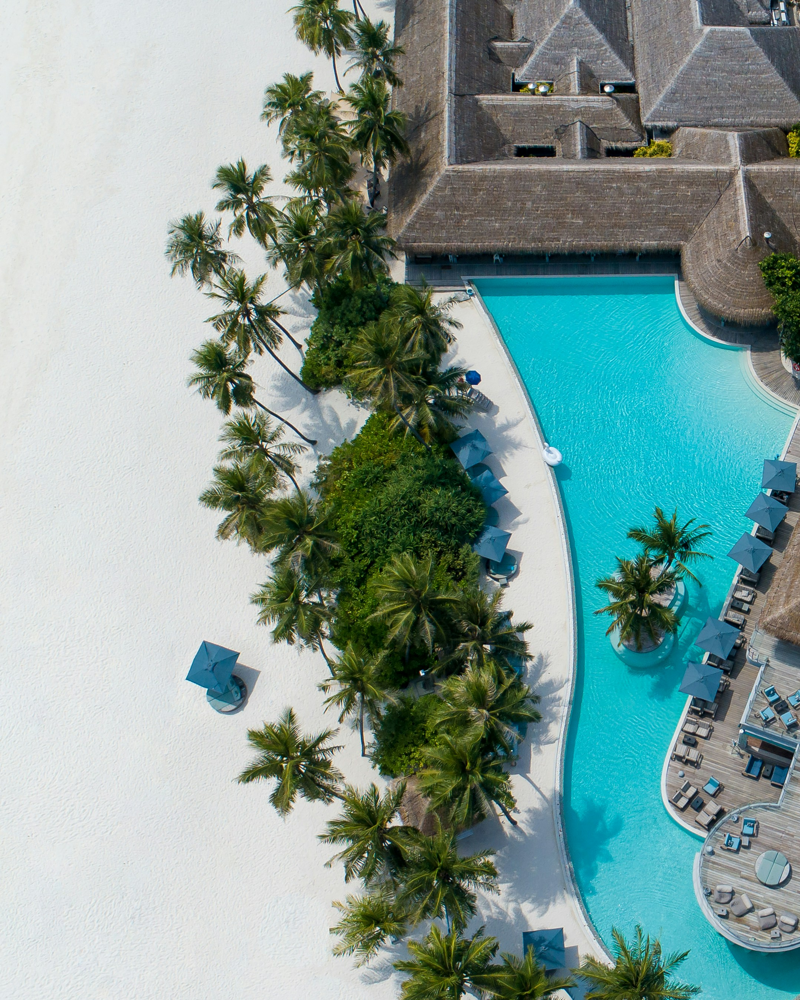

Hostel
Taniti Island has one hostel. Perfect for guests who are looking to save money on lodging. Hostels are also a great way to meet fellow travelers!
Hotel
Taniti has many small, family-owned hotels that offer clean, comfortable lodging options for parties of any size.

Bed & Breakfast
The island is home to several cozy Bed & Breakfast establishments. This is the perfect option for anyone looking to enjoy slow mornings.
Resort
Taniti Island has one large, four-star resort! This is the perfect option for travelers who want to experience every luxury the island has to offer!
